Pumpkin Spiced Ginger Cinnamon Rolls

~ raw, vegan, gluten-free ~
This recipe’s mouth-watering experience starts with the pleasant smell of the cinnamon roll dough emanating from the dehydrator. I tell you, the aroma is enough to make your cheeks squirt… and no, your mouth isn’t watering… it is crying tears of joy!
Fragrances have the ability to spark a memory or evoke an emotion. They can be a powerful tool in the hands of a skilled “baker” to welcome warmth and pleasure into the house.
I used a combination of ripe bananas and really ripe plantains. Let’s briefly talk about that unusual fruit because they are vital to our success in creating this cheek squirting dessert. I wish I could say that this is a modified version of the recipe my great-grandmother used to make… but to be honest, I don’t think she would know what a plantain was if it was sitting right in front of her.
Know the Ingredients
First off, green bananas and green plantains are high in starch and low in sugar which can create a dough that has more of a mouth-drying astringency to it.
Polka-a-dotted, yellow-jacketed bananas have a mix of sugar and starch that produce a natural sweetness in the dough. Don’t use bananas that have an inner slimy flesh; they will create a watery batter.
At first glance, plantains might look like a banana on steroids. But when you pick it up, you realize it’s not only bigger but also firmer and has a thick skin. It doesn’t peel like a banana, taste (much) like a banana, and it isn’t eaten like a banana. Ripe plantains are sweet like a banana, without the banana flavor. They are its starchy cousin, and due to the added starch, they need to be cooked or ripened really well to be edible.
Use extremely ripe plantains. A ripe plantain is at its best when it’s mostly black with a little yellow, and slightly firm to the touch. The skins on mine were totally black and looked to be something right out of a horror movie. In most cases, you will have to ripen the plantain at home. And depending on the time of year and temperature, they can take anywhere from a few days to a week to ripen.
Cinnamon rolls with a lofty texture
Most of us have experienced creating wraps with a banana puree only. They are wonderful! Much like fruit leather. But for the cinnamon roll dough, I was looking for more of a bread-like texture. With the use of chia seeds and psyllium, I was able to do just that. Both chia and psyllium have binding properties, but I really didn’t need that in this recipe due to the bananas and plantains… but I leaned on them for the “fluffy” texture that was achieved in this recipe.
When I say, fluffy, I am not referring to yeast-forming air pockets as you see in baked bread, it is more like a sponginess… I know that doesn’t sound as appealing, but that’s the best description that I can give.
Frosting
The frosting is the next crucial part of these wonderful cinnamon rolls. Just like in the children’s storybook of Goldilocks and the Three Bears… it can be too hard or too soft… it has to be just right. I created a special frosting for this recipe because I wanted all the amazing flavors to pair well together.
The recipe for the Pumpkin Ginger Frosting makes a large amount so if you don’t have other treats to use the frosting on, cut the recipe in half. But I will let you in on a little secret, the frosting also makes for a great ice cream batter so what could be more heavenly than these cinnamon rolls with a dollop of Pumpkin Ginger Frosting Ice Cream? I will share more below in the preparation section on what to look for when it comes to the texture of the frosting. I believe that I shared what I needed to so you too can create this mouth-watering dessert. I would love to hear about your experiences. Many blessings, amie sue
Dough:
- 3 large (543 g) ripe plantains
- 2 (200 g) ripe banana
- 1/4 cup chia seeds
- 1 Tbsp psyllium husks
- 1/4 tsp Himalayan pink salt
Filling:
- 1 1/2 cups Pumpkin Ginger Frosting
- 2-4 Tbsp raisins or dried cranberries
- 2 Tbsp crystallized ginger pieces
- Cinnamon for sprinkling
- Crushed walnuts for topping
Preparation:
- In the blender, combine the plantains, banana, chia seeds, psyllium, and salt. Blend until creamy smooth.
- This creates 3 3/4 cups of puree.
- Let the mixture sit for 15 minutes to thicken.
- Spread the batter on a non-stick sheet that fits your dehydrator (not the mesh sheets).
- I have an Excalibur, so my trays are square, which is ideal for this recipe.
- If you don’t have non-stick sheets, use parchment paper, but not wax.
- Spread 1/4 – 1/2″ thick, square up the edges. Mine measured 10.5 x 11.”
- Dehydrate at 145 degrees (F) for 1 hour, then reduce to 115 degrees (F) for 6-8 hours.
- Part way through the dry time, flip the “bread” over onto a mesh sheet and peel off the non-stick sheet. If any batter is sticking to the non-stick sheet… it isn’t ready.
- Dry only to the point to where the batter is still wet or sticky to the touch.
- Make the frosting the same time you start the “bread”, so the frosting has time to firm up for spreading.
Assembly:
- Have the “bread” and frosting ready to go.
- Place plastic wrap on the counter.
- Position the “bread” on the plastic wrap so that you have a few extra inches of plastic hanging from each end.
- Spread the thick frosting evenly on top of the “bread.” Roughly 1/4″ high. Don’t take the frosting all the way up to the edge, that way it won’t spill out during the rolling process.
- Don’t use the frosting if it is runny. Allow it to chill longer until it is very thick.
- Sprinkle raisins and crystallized ginger over the top of the frosting. Use my measurements as a guideline. Add as much or little as you like. You can also sprinkle cinnamon over this… I meant to but forgot.
Rolling Process:
- I found that if I rolled the cinnamon rolls towards me, instead of way, it was much easier. See what feels right for you.
- Grab the tail end of the plastic wrap and use it to lift and guide the cinnamon roll into an even roll by tucking the dough under.
- Don’t roll it too loose or you will have large air pockets and don’t roll it too tight to where the frosting oozes out. Roll it just right. (like the bears)
- Keep the roll wrapped in plastic and transfer it to a tray and chill the roll in the refrigerator for a few hours. This will just help the frosting firm back up if it got warm during the rolling process and will make it easier to slice.
- Once chilled, remove the plastic and slice into 1″ slices.
- Because it is rich in flavor, I wouldn’t go much thicker. This ensures no waste or over-filled tummies.
- Place each slice flat in a pan, snugging them up against one another.
- Take some frosting and add a little almond milk or water to it, so it can be thinned out to an icing texture. Ladle the icing on top of each slice… then enjoy!
- Store left-overs in the fridge for 1 day. The longer they sit, the more the “bread” texture changes. They taste amazing right out of the fridge, but even better once they reach room temp. The flavors are more pronounced.
-
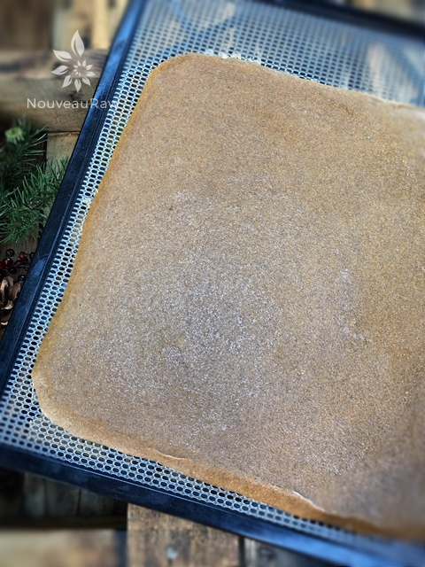
-
This is the top of the plantain / banana “bread”
-
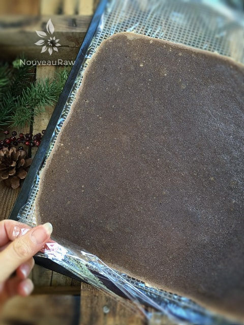
-
This is the bottom. Be sure to lay plastic down with the good side of the “bread” facing down.
-
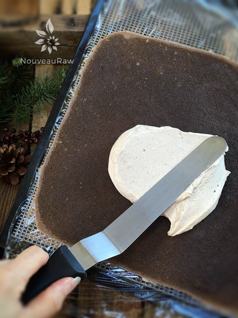
-
Spread the frosting on evenly, stopping about 1/4″ from the edges.
-
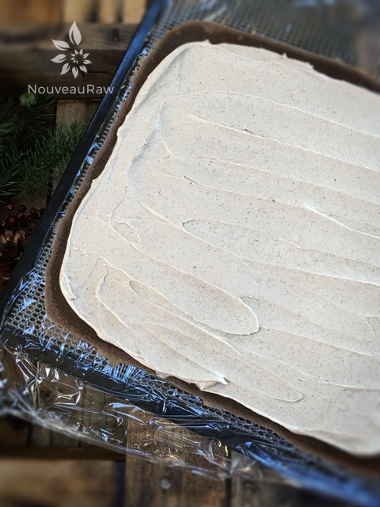
-
Spread the frosting on evenly, stopping about 1/4″ from the edges, nice and even
-
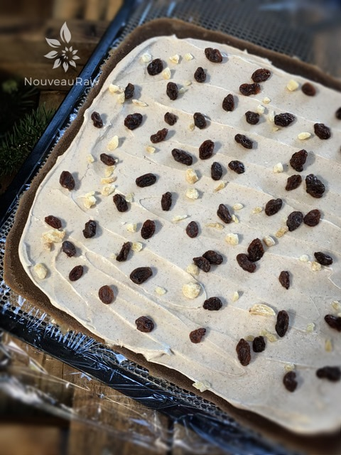
-
Sprinkle on raisins / cranberries / crystalized ginger
-
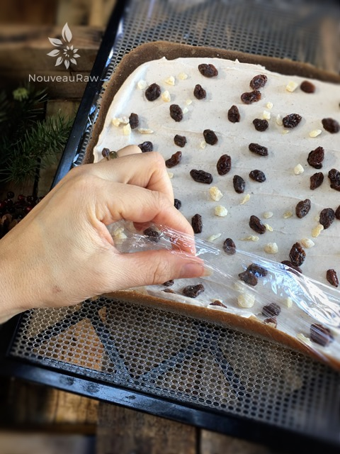
-
Use the plastic as your guide as your start rolling the “bread”
-
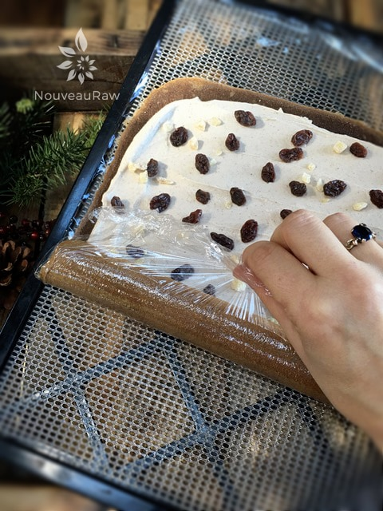
-
Keep tucking the “bread” as you roll.
-
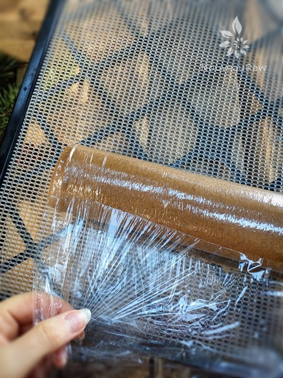
-
I found it helpful to turn the tray around so I was pulling the roll towards me.
-
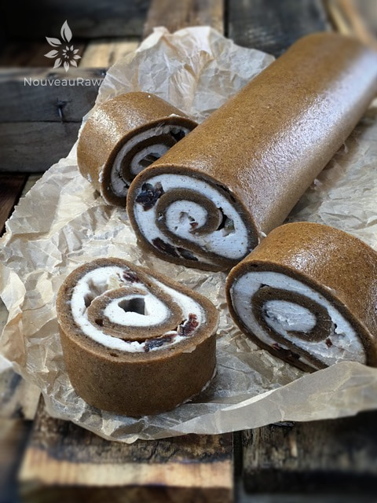
-
Chill for 1+ hours, then slice 1″ thick.
-
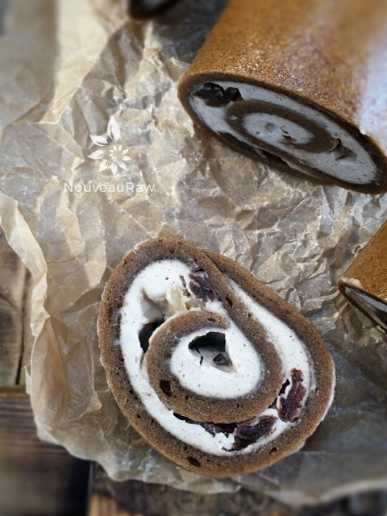
-
I wouldn’t slice them any thicker because they are rich in flavor.
-
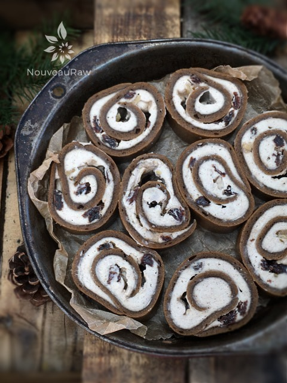
-
Tuck into a pan…
-
-
And more frosting that has been thinned down a tad with water or almond milk. Sprinkle walnuts on top if you wish. Enjoy!
© AmieSue.com